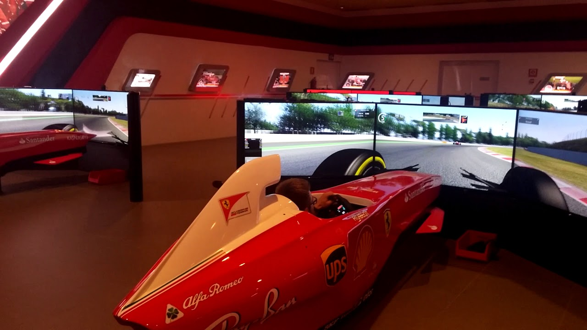
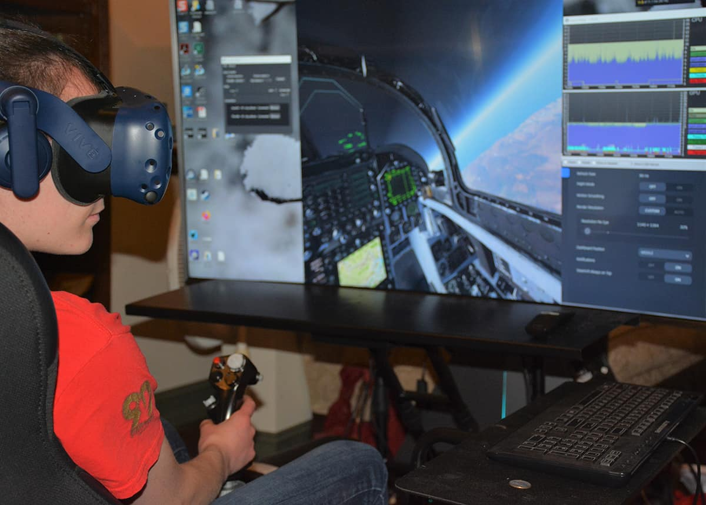

Semi-Immersive VR
Semi-Immersive VR on virtuaalreaalsuse vorm, mis pakub osalist sukeldumist digitaalsesse maailma. Erinevalt täielikust VR-immerseerumisest, mis asendab füüsilise maailma täielikult virtuaalse keskkonnaga, kasutab Semi-Immersive VR kasutaja teatud määral endiselt ümbritseva maailma tajumist.
Mis on Semi-Immersive VR?
Semi-Immersive VR tehnoloogiad on sageli kasutusel hariduses ja väljaõppes, pakkudes interaktiivset kogemust, mis on piisavalt kaasahaarav, et õppija saaks sukelduda õppeainesse, kuid jätab alles teatud ühenduse reaalsusega. Näiteks võib kasutaja näha suurt projektsiooniekraani või mitmeid monitore, mis kuvavad virtuaalset keskkonda, samas kui ta tegelikult asub füüsilises ruumis, kus saab kasutada tavalisi sisestusseadmeid nagu klaviatuur või hiir. Eksempel Vormel auto simulaatorist, mis on hea alternatiiv ka päris sõitjatele, kes oma oskusi treenimiseks ja arendamiseks.
Kuidas Semi-Immersive VR töötab?
Tööpõhimõte on lihtne: luuakse visuaalne sukeldumine, kasutades suuri ekraane või projektoreid, mis näitavad interaktiivseid 3D-graafikaid. Kasutajad suhtlevad keskkonnaga erinevate sisestusseadmete abil, mis jäljendavad liikumist või tegevusi virtuaalmaailmas, ilma et nad peaksid kandma täielikku virtuaalreaalsuse peakomplekti.
Rakendused
Semi-Immersive VR-i rakendused on levinud õppesimulaatorites, nagu lennu- või sõidusimulaatorid, mis on mõeldud pilootide või autojuhtide väljaõppeks. Samuti on seda tehnoloogiat kasutatud arhitektuuris ja inseneriteadustes, et visualiseerida ehitisi või masinaid enne nende reaalset ehitamist. Eksempel lennusimulaatorist.
Tulevik
Semi-Immersive VR tehnoloogia areneb pidevalt ning selle kasutusalad laienevad. Semi-immersiivne VR võib muutuda haridus- ja koolitusprogrammide oluliseks osaks, pakkudes interaktiivseid ja kaasahaaravaid õpikogemusi.